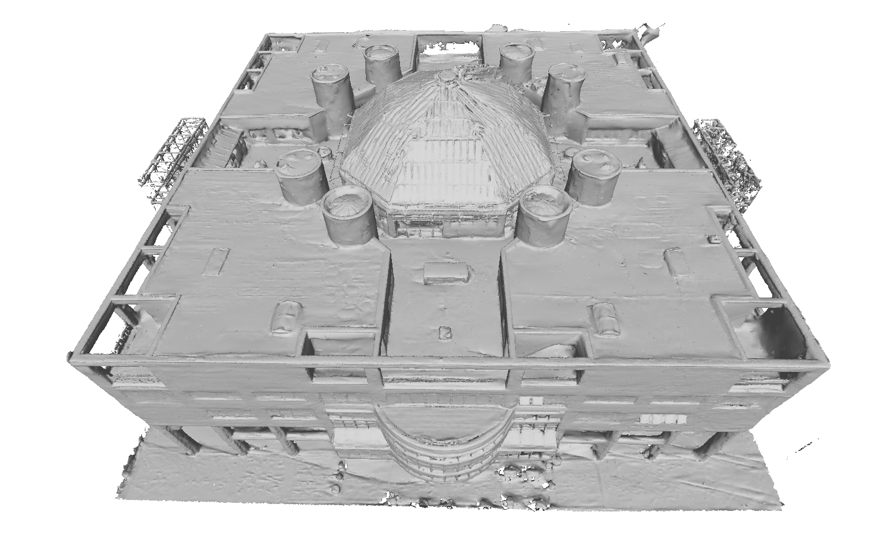
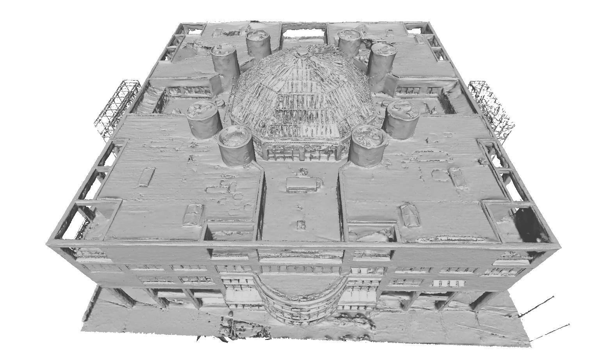

Dortmund


Over the last few decades, image-based building surface reconstruction has garnered substantial research interest and has been applied across various fields, such as heritage preservation, architectural planning, etc. Compared to the traditional photogrammetric and NeRF-based solutions, recently, Gaussian fields-based methods have exhibited significant potential in generating surface meshes due to their time-efficient training and detailed 3D information preservation. However, most gaussian fields-based methods are trained with all image pixels, encompassing building and nonbuilding areas, which results in a significant noise for building meshes and degeneration in time efficiency. This paper proposes a novel framework, Masked Gaussian Fields (MGFs), designed to generate accurate surface reconstruction for building in a time-efficient way. The framework first applies EfficientSAM and COLMAP to generate multi-level masks of building and the corresponding masked point clouds. Subsequently, the masked gaussian fields are trained by integrating two innovative losses: a multi-level perceptual masked loss focused on constructing building regions and a boundary loss aimed at enhancing the details of the boundaries between different masks. Finally, we improve the tetrahedral surface mesh extraction method based on the masked gaussian spheres. Comprehensive experiments on UAV images demonstrate that, compared to the traditional method and several NeRF-based and Gaussian-based SOTA solutions, our approach significantly improves both the accuracy and efficiency of building surface reconstruction. Notably, as a byproduct, there is an additional gain in the novel view synthesis of building.


@article{2024MGFs,
title={MGFs: Masked Gaussian Fields for Meshing Building based on Multi-View Images},
author={Tengfei Wang, Zongqian Zhan*, Rui Xia, Linxia Ji, Xin Wang},
booktitle={arxiv preprint arxiv:2408.03060},
year={2024}
}
```